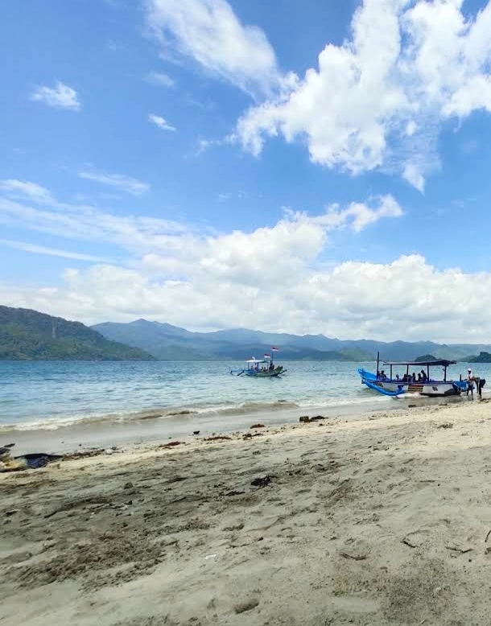
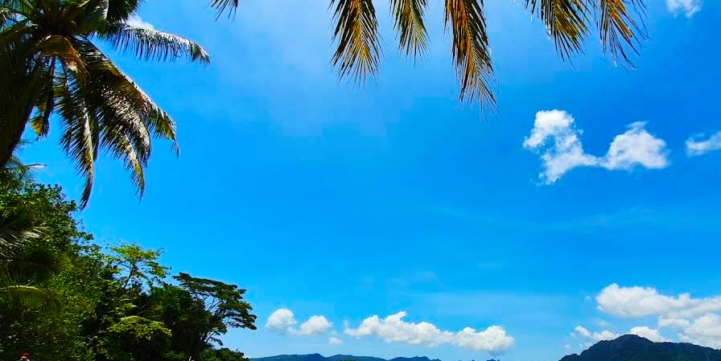

Pantai Mutiara
Pesona pantai tersembunyi di Trenggalek dengan pasir putih lembut dan air laut jernih yang menenangkan jiwa.


Deskripsi
Pantai Mutiara terletak di Desa Tasikmadu, Kecamatan Watulimo,
Kabupaten Trenggalek. Pantai ini terkenal dengan pasirnya yang putih
bersih dan air laut yang jernih. Suasananya masih sangat alami, cocok
bagi wisatawan yang mencari ketenangan jauh dari keramaian.
Garis pantainya yang landai berpadu dengan perbukitan hijau
menciptakan panorama menakjubkan, terutama saat matahari terbit dan
terbenam.
Jam Buka
Setiap Hari
06.00 – 18.00 WIB
Harga Tiket Masuk
- Dewasa: Rp8.000
- Anak-anak: Rp5.000
- Parkir: Rp3.000–Rp5.000
📍 Lokasi
Pantai Mutiara berada di Desa Tasikmadu, Kecamatan Watulimo, Kabupaten Trenggalek, Jawa Timur. Dapat ditempuh sekitar 45 menit dari pusat kota. Jalan menuju pantai cukup baik dengan sedikit tanjakan.